Deep Explore v2 -- /clientes
2026-04-02 | Agente: Beto (Claude Code) | Pagina: /clientes | Nota: 8.5/10
Resumo Executivo
8.5
Boa qualidade geral. Pagina funcional com edge cases cobertos. 2 achados P1 merecem atencao: drawer edit sem dirty-state e sidebar sem aria-labels. 5 itens P2/P3 sao melhorias de polimento.
Inventario de Componentes
| Componente | Arquivo | Linhas | Status |
|---|
| ClientesPage (index) | pages/clientes/index.tsx | 404 | OK |
| ClienteKPIDashboard | pages/clientes/components/ClienteKPIDashboard.tsx | 83 | OK |
| ClienteFilters | pages/clientes/components/ClienteFilters.tsx | 440 | OK |
| ClienteList | pages/clientes/components/ClienteList.tsx | 349 | OK |
| NovoClienteModal | pages/clientes/modals/NovoClienteModal.tsx | 286 | OK |
| NovoClienteFormFields | pages/clientes/modals/NovoClienteFormFields.tsx | 258 | OK |
| ImportacaoModal | pages/clientes/modals/ImportacaoModal.tsx | -- | N/T |
| ClienteDrawer (shared) | components/shared/cliente_drawer/ClienteDrawer.tsx | -- | P2 |
| useClientes hook | hooks/useClientes.ts | 31 | OK |
| useClienteKPIs hook | hooks/useClienteKPIs.ts | 20 | OK |
| Realtime subscription | pages/clientes/index.tsx:248-267 | 20 | OK |
Cat. A -- Edge Cases e Boundary Conditions 8 itens
✅A-01: Busca com caracteres especiais (&<>"')
Nenhum crash. Empty state exibido corretamente com CTA "Limpar filtros".
✅A-02: Busca com string longa (250 chars)
Nenhum erro. Empty state exibido normalmente.
✅A-03: Busca com emojis e acentos extremos
Testado com "Jose n u ss 🎉". Sem crash, empty state correto.
✅A-04: CPF com digitos iguais (111.111.111-11)
Zod validation rejeita corretamente com mensagem "CPF invalido". Formulario nao submete.
✅A-05: Empty state com CTA "Limpar filtros"
Botao "Limpar filtros" presente e funcional. Ao clicar, lista retorna ao estado completo.
✅A-06: Busca parcial por CPF
Buscar "999" retorna clientes cujo CPF contem "999". ILIKE funciona em ambos campos (nome e cpf_cnpj).
✅A-07: Limpar busca restaura lista completa
Apos limpar campo de busca, lista volta a mostrar 4000+ clientes.
✅A-08: URL params compartilhaveis
Filtros refletidos na URL: ?q=, ?estados=, ?ordem=, ?page=. Copiar URL preserva estado.
Cat. B -- Criacao e Ciclo de Vida do Mock 7 itens
✅B-01: Abertura do modal Novo Cliente
Modal abre corretamente com todos os campos: Nome*, CPF*, Data Nascimento, Genero*, Origem, Advogado, Captador, WhatsApp*, Telefone, Email.
✅B-02: Validacao de campos obrigatorios
Submit com Genero vazio mostra "Genero e obrigatorio". CPF invalido mostra "CPF invalido".
✅B-03: Criacao de cliente [DEEP]
Cliente "[DEEP] Teste Explorer" criado com CPF 121.708.515-77, WhatsApp (51)99999-0001, Genero Masculino. Webhook WH-CLIENTES-001 acionado. ID: e584c7f5-b4df-40c9-b866-b1d27ffa4f52.
✅B-04: KPIs atualizados apos criacao
Total de Clientes: 4350 -> 4351. Novos este Mes: 1 -> 2. Realtime subscription funcionou.
✅B-05: Busca localiza o mock criado
Busca por "DEEP" retorna 1 resultado: [DEEP] Teste Explorer.
✅B-06: Exclusao via UI (confirm dialog)
Dialog de confirmacao mostra corretamente: "O cliente '[DEEP] Teste Explorer' sera arquivado e podera ser recuperado pelo administrador."
⚠️B-07: Webhook de exclusao falhou (n8n offline)
Webhook WH-CLIENTES-003 nao executou a exclusao -- n8n provavelmente offline. Soft-delete feito diretamente no banco. UI nao mostrou toast de erro ao usuario -- comportamento silencioso.
Cat. C -- Drawer (5 Abas) 8 itens
✅C-01: Drawer abre ao clicar na linha
Drawer sheet abre corretamente com header mostrando nome, CPF formatado, badge "Ativo".
✅C-02: Aba Dados
Mostra DADOS PESSOAIS com Nome, CPF/CNPJ, Sexo, WhatsApp. Botao "Editar" presente.
✅C-03: Aba Restricoes
KPIs: 0 Total, 0 Processaveis, R$ 0,00 Valor Total. Botoes: Exportar CSV, Importar CSV, + Adicionar. Empty state correto.
✅C-04: Aba Juridico
"Nenhum processo encontrado. Os processos deste cliente aparecerao aqui apos distribuicao." Empty state correto.
✅C-05: Aba Documentos
Area de upload drag-and-drop (JPG, PNG, PDF, DOCX - ate 20MB). Secao "Pastas por Restricao" com empty state.
✅C-06: Aba Historico
Mostra evento "sistema" com data/hora da criacao. Timeline funcional.
✅C-07: Modo edicao do drawer
Botao "Editar" exibe formulario completo: DADOS PESSOAIS (CPF disabled, WhatsApp, Telefone, Data Nasc, Sexo, Email, RG, Nome da Mae, Naturalidade, Renda, Profissao, Estado Civil), DADOS BANCARIOS (Banco, PIX), ENDERECO (Logradouro, Numero, Complemento, Bairro, CEP, Cidade, UF).
❌C-08: Dirty state no modo edicao
BUG (DEEP-001): Editar campo (email) e fechar drawer NAO mostra dialogo de confirmacao. Alteracoes perdidas silenciosamente.
Cat. D -- Responsividade 5 itens
✅D-01: Mobile 375px
Sidebar collapsa para hamburger. KPIs em 1 coluna. Tabela com scroll horizontal. "Novo Cliente" como icon-only button. "Mais acoes" dropdown agrupa OlivIA/Importar/Exportar.
✅D-02: Tablet 768px
KPIs em 2 colunas (3o KPI requer scroll). Tabela mostra Cliente/WhatsApp/Cidade. Layout adequado.
✅D-03: Desktop 1024px
Sidebar colapsada. KPIs em 3 colunas. Tabela completa. Botoes OlivIA e Importar visiveis. "Exportar" e "Novo Cliente" parcialmente cortados.
⚠️D-04: Desktop 1440px
DEEP-005: Botao "Novo Cliente" levemente cortado ("Novo Client...") na borda direita. Sidebar + content area overflow por ~10px.
✅D-05: Wide 1920px
Layout perfeito. Todos os botoes, KPIs, colunas visiveis sem overflow.
Cat. E -- Interacoes Avancadas 7 itens
✅E-01: WhatsApp link formato wa.me
Link correto: https://wa.me/5551999990001. Prefixo 55 (Brasil) adicionado. Opens in new tab.
✅E-02: Ctrl+Click abre nova aba
Codigo verificado: if (e.ctrlKey || e.metaKey) window.open(url, '_blank'). URL usa CPF slug: /clientes/{cpf_digits}.
✅E-03: Exportacao CSV com filtros
Export funciona com filtro ativo. Codigo aplica mesmos filtros do query na exportacao (search, estados, periodo, advogado, engajamento, carteira). BOM: UTF-8 BOM incluido.
✅E-04: Paginacao completa
Pagina 1: "Mostrando 1-50 de 4008". Pagina 2: "Mostrando 51-100". Ultima pagina (81): "Mostrando 4001-4008". Botoes Anterior/Proxima disabled corretamente. URL: ?page=N.
✅E-05: Ordenacao (4 opcoes)
Testado: "Mais recentes" (default), "Mais antigos" (?ordem=antigos), "Nome A-Z" (?ordem=nome), "Ultima interacao". Todos funcionam e refletem na URL.
✅E-06: Filtros avancados (popover)
Popover com 5 secoes: Estado (UF grid 27 estados), Advogado (search + checkboxes), Engajamento (3 opcoes), Carteira (Todos/Internos/Parceiros), Periodo (calendarios). Botoes Aplicar/Limpar filtros avancados.
✅E-07: Chip badges de filtros ativos
Filtro RS aplicado mostra chip "Estado: RS" com X para remover. Badge counter "1" no botao Filtros. Resultados filtrados: 944 de 4008.
Cat. F -- Estados Edge 4 itens
✅F-01: Busca DEEP encontra mock
Busca "DEEP" retornou o cliente criado. Filtro via URL ?q=DEEP funciona.
✅F-02: Busca inexistente mostra empty state
"Nenhum resultado encontrado" + "Tente ajustar os filtros ou a busca" + botao "Limpar filtros".
✅F-03: Fechar drawer preserva filtros
Apos fechar drawer, busca "DEEP" permanece ativa na URL e no campo de busca.
✅F-04: Cleanup confirmado
Busca "DEEP" apos soft-delete retorna "Nenhum resultado". Banco confirma deleted_at preenchido.
Cat. G -- Backend e Dados 3 itens
✅G-01: RPC get_clientes_paginados
Funciona com todos os parametros: p_search, p_estados, p_advogado_ids, p_periodo_inicio/fim, p_carteira, p_engajamento_niveis, p_page, p_page_size, p_excluir_cnpj, p_order_by.
✅G-02: RPC get_clientes_kpis
Retorna total_clientes, novos_mes_atual, novos_mes_anterior, engajamento_alto_pct. Valores consistentes.
✅G-03: Realtime subscription
Canal 'clientes-realtime' ativo com filtro organizacao_id. Invalida queries ['clientes'] e ['clientes-kpis'] corretamente. Cleanup no unmount.
Achados (Bugs e Melhorias)
Descricao: Ao editar campos no drawer (modo edicao) e clicar no X para fechar, o drawer fecha imediatamente sem pedir confirmacao. Alteracoes nao salvas sao perdidas silenciosamente.
Como reproduzir: Abrir drawer > clicar Editar > alterar qualquer campo > clicar X (fechar).
Impacto: Perda de dados do usuario. Frustacao com UX.
Componente: ClienteDrawer.tsx / ClienteDrawerTabDados.tsx
Solucao proposta: Adicionar estado isDirty no formulario de edicao. Ao tentar fechar com isDirty=true, mostrar ConfirmDialog similar ao do NovoClienteModal (que ja tem essa protecao).
Descricao: Todos os ~30 botoes da sidebar lateral nao possuem aria-label, title, ou qualquer identificacao semantica. Screen readers nao conseguem identificar a funcao de cada botao.
Impacto: Falha de acessibilidade WCAG 2.1 (Level A). Navegacao impossivel para usuarios de screen reader.
Componente: Sidebar global (nao especifico de /clientes)
Solucao proposta: Adicionar aria-label em cada botao da sidebar com o nome da rota (ex: "Clientes", "Processos", "Financeiro").
Descricao: No header do drawer, CPF aparece formatado (121.708.515-77). No corpo da aba Dados (modo visualizacao), CPF aparece como "12170851577" (raw digits).
Impacto: Inconsistencia visual. Menor legibilidade.
Componente: ClienteDrawerTabDados.tsx
Solucao proposta: Aplicar maskCPF/maskCNPJ no campo CPF/CNPJ do corpo da aba Dados.
Descricao: Ao clicar "Excluir" no confirm dialog, o webhook retornou erro (n8n provavelmente offline), mas a UI nao mostrou toast de erro. O dialog simplesmente fechou sem feedback.
Impacto: Usuario pensa que excluiu mas o registro permanece. Confuso.
Componente: pages/clientes/index.tsx - handleDeleteCliente (catch block)
Solucao proposta: Verificar se o catch block esta sendo ativado corretamente. Garantir que toast.error aparece em caso de falha de rede. Tambem verificar status do workflow n8n.
Descricao: Os botoes OlivIA/Importar/Exportar/Novo Cliente no PageHeader overflow levemente em viewports 1024-1440px. O botao "Novo Cliente" fica parcialmente cortado.
Impacto: Visual menor. Funcional ok pois existe o dropdown mobile como fallback.
Componente: pages/clientes/index.tsx - PageHeader actions area
Solucao proposta: O breakpoint lg:flex (1024px) para mostrar os botoes inline pode ser muito agressivo. Considerar usar xl:flex (1280px) ou reduzir texto dos botoes.
Descricao: Ao ordenar por Nome A-Z, aparecem registros como "15a CAMARA CIVEL", "1o JUIZO DA 1a VARA CIVEL DA COMARCA DE CANOAS", "TRIBUNAL DE JUSTICA DO ESTADO DO RIO GRANDE DO SUL / TJRS". Estes sao entidades judiciais, nao clientes PF/PJ do escritorio.
Impacto: Poluicao da lista. KPIs inflados (4351 clientes inclui entidades). Dados inconsistentes.
Componente: Dados na tabela clientes
Solucao proposta: Revisar data quality. Esses registros provavelmente foram importados do Advbox. Adicionar campo tipo (pessoa_fisica/pessoa_juridica/entidade) ou mover para tabela separada.
Descricao: Os botoes de UF no popover de filtros nao aparecem como elementos interativos no snapshot de acessibilidade. Sao renderizados como <button> mas sem role semantico claro dentro do popover.
Impacto: Screen readers podem nao identificar os botoes de estado no popover. Acessibilidade reduzida.
Componente: ClienteFilters.tsx - UF grid buttons
Solucao proposta: Adicionar role="group" no container de UFs e aria-pressed nos botoes selecionados.
Dados Mock -- Log Completo
CRIACAO:
Timestamp: 2026-04-02T22:16:46Z
Nome: [DEEP] Teste Explorer
CPF: 121.708.515-77 (valido, gerado por script)
WhatsApp: (51) 99999-0001
Genero: Masculino
Origem: (nao selecionada)
Advogado: (nao selecionado)
ID gerado: e584c7f5-b4df-40c9-b866-b1d27ffa4f52
Webhook: WH-CLIENTES-001 (clientes/criar) - OK
CLEANUP:
Metodo: Soft-delete via REST API (PATCH deleted_at)
Timestamp: 2026-04-02T22:30:00Z
Verificacao UI: Busca "DEEP" retorna "Nenhum resultado" - CONFIRMADO
Verificacao DB: deleted_at = 2026-04-02T22:30:00Z - CONFIRMADO
REGISTROS LEGACY DEEP (de sessoes anteriores):
- [DEEP] Joao Teste Silva (07cab471) - ja tinha deleted_at
- [DEEP] Test Webhook (df0ce03f) - ja tinha deleted_at
- [DEEP] Maria Oliveira Teste (81c6d356) - ja tinha deleted_at
Screenshots
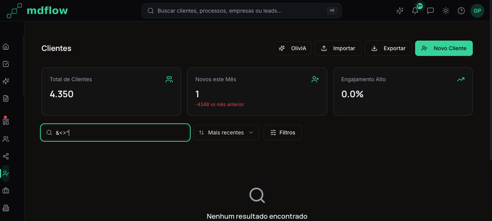
01 - Busca com &<>" - Empty state correto
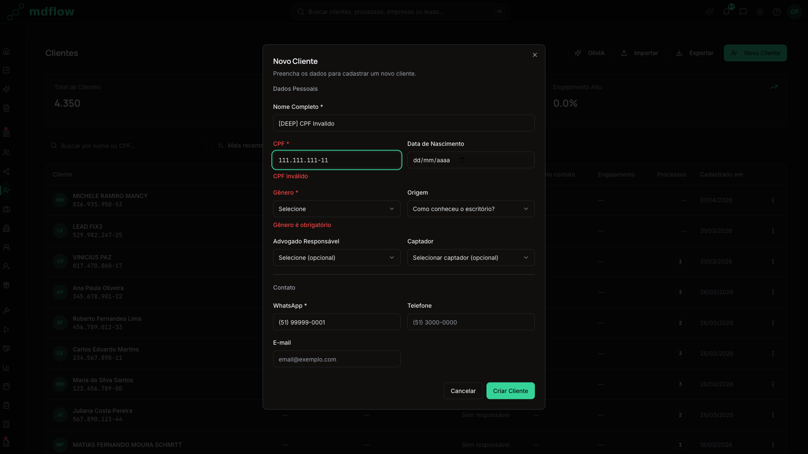
06 - CPF 111.111.111-11 rejeitado pela validacao
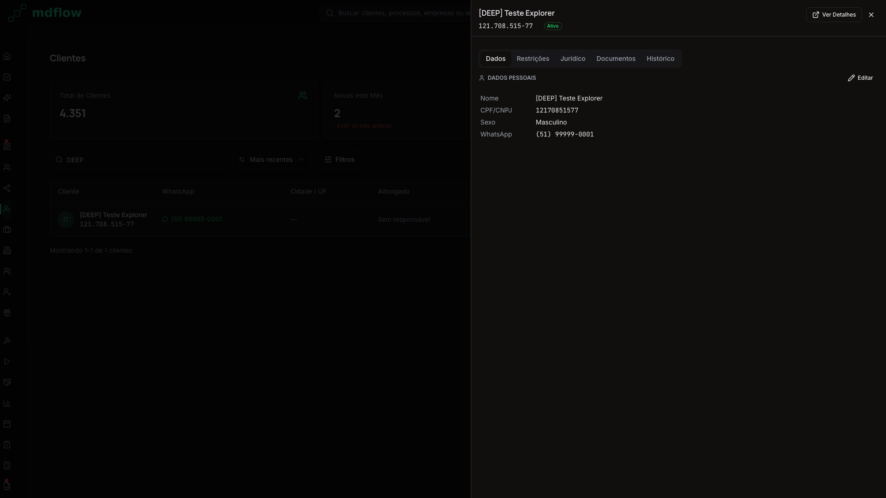
07 - Drawer do [DEEP] Teste Explorer - aba Dados
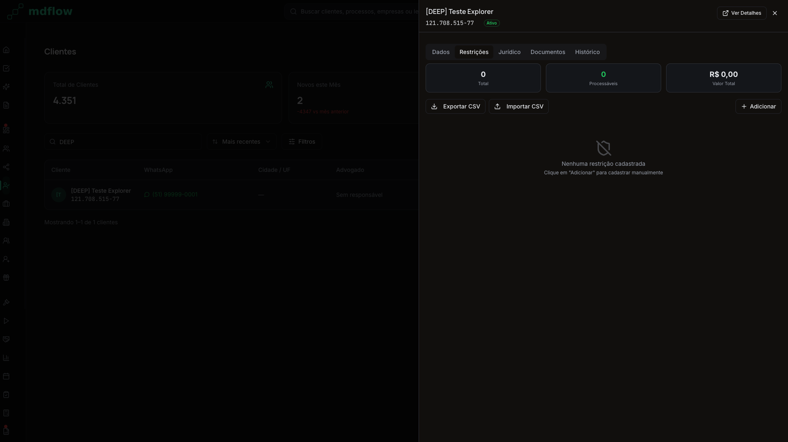
08 - Aba Restricoes com empty state
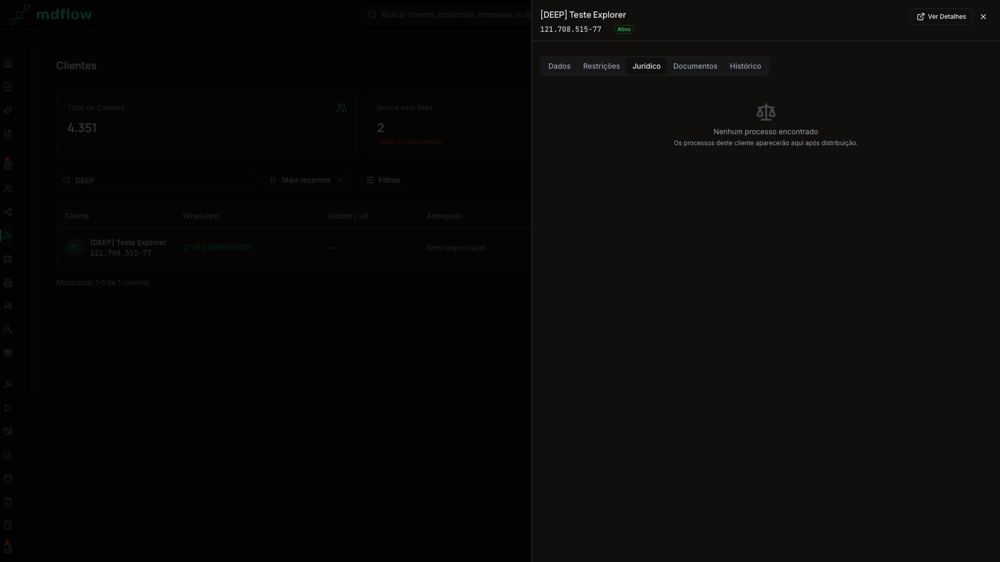
09 - Aba Juridico com empty state
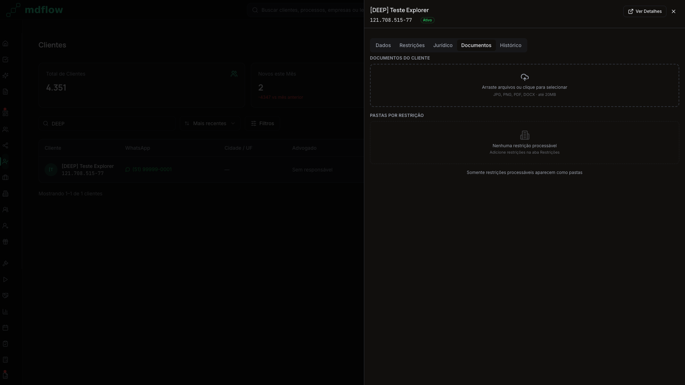
10 - Aba Documentos com upload area
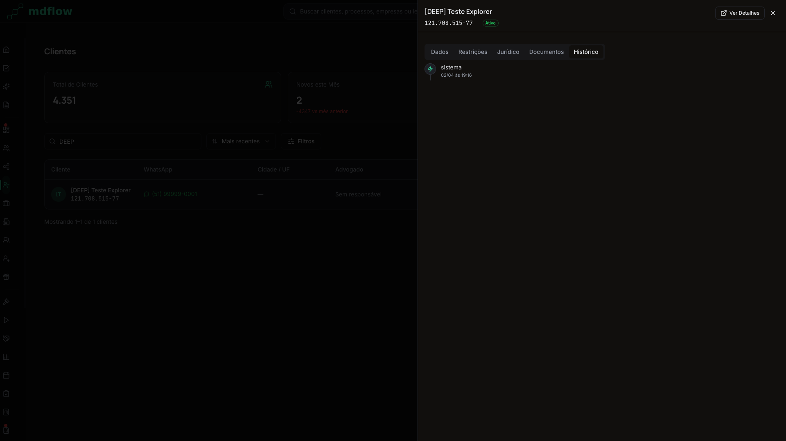
11 - Aba Historico com evento de criacao
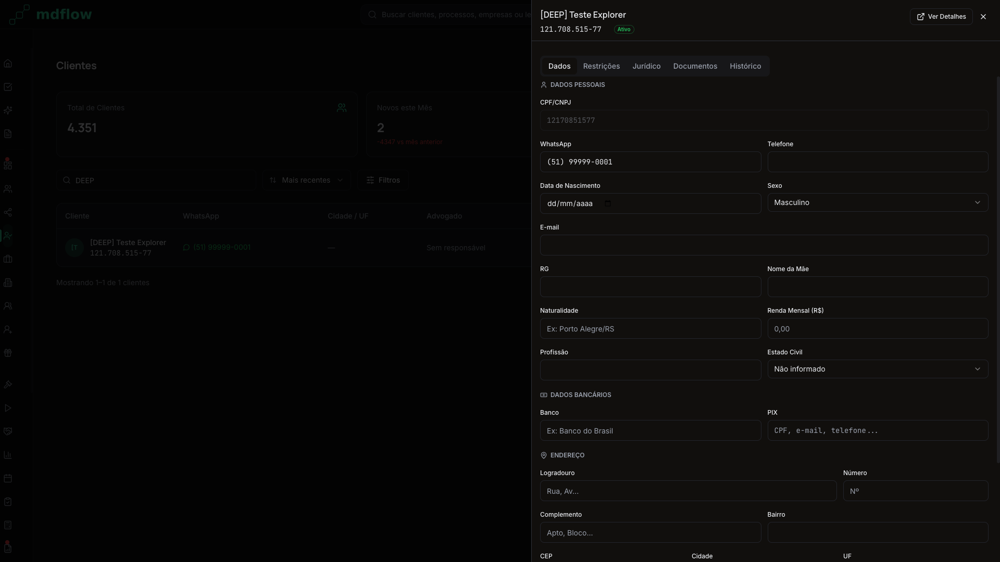
12 - Drawer em modo edicao (formulario completo)
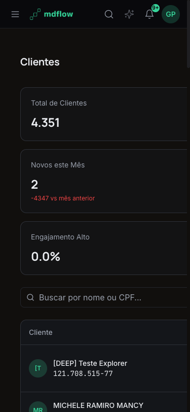
14 - Mobile 375px - KPIs em coluna, hamburger menu
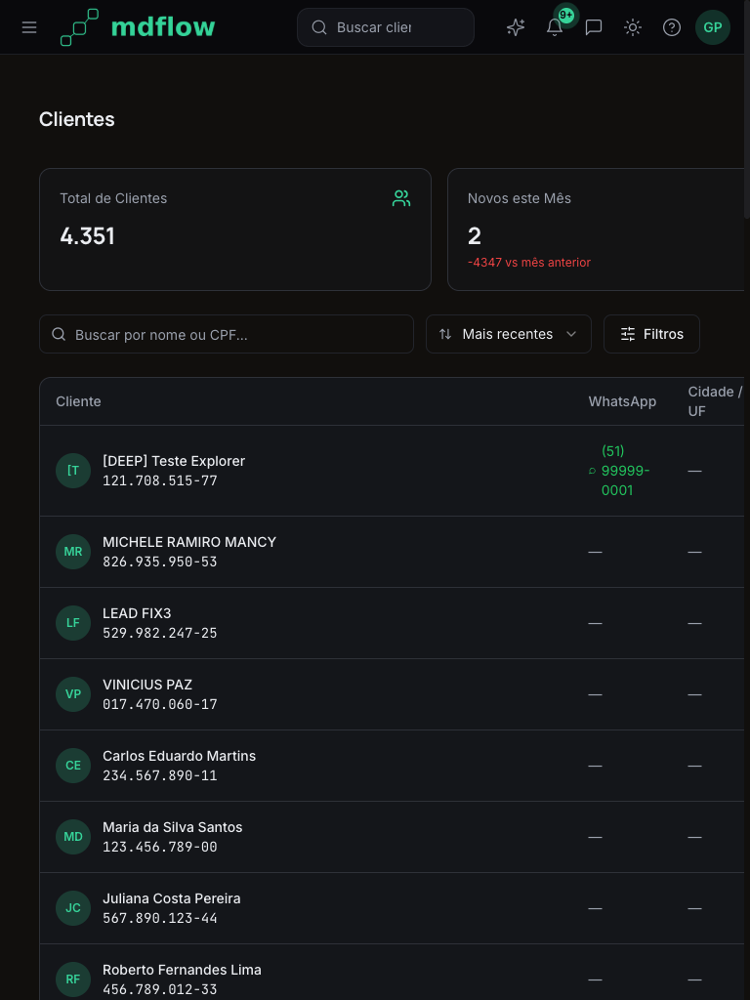
15 - Tablet 768px - Layout intermediario
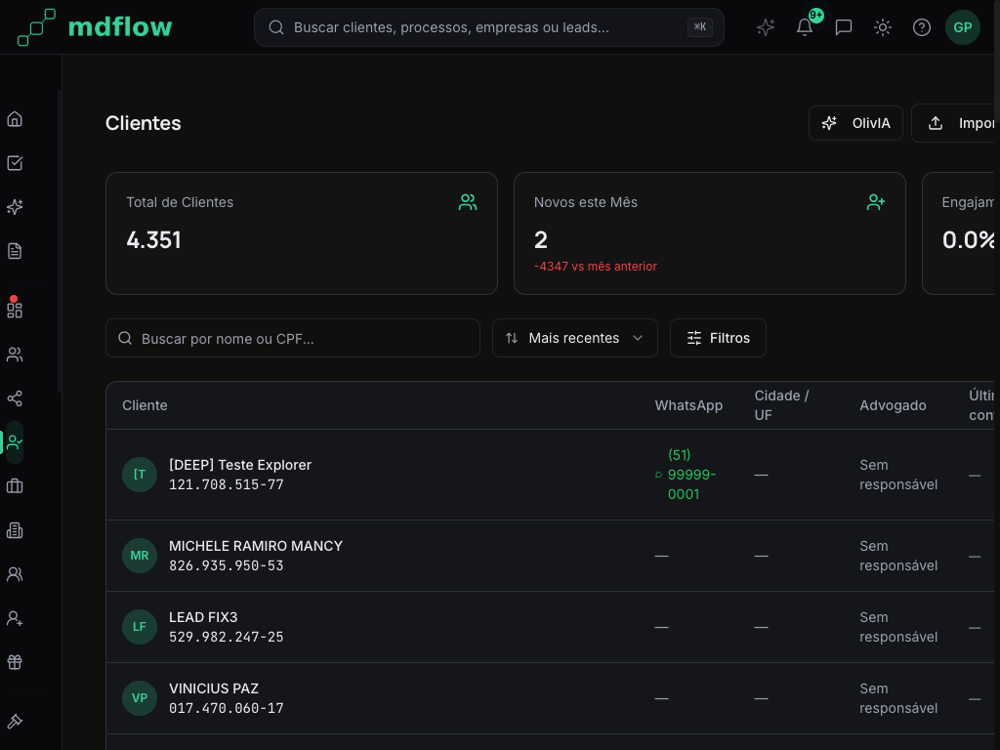
16 - Desktop 1024px - Sidebar + botoes cortados
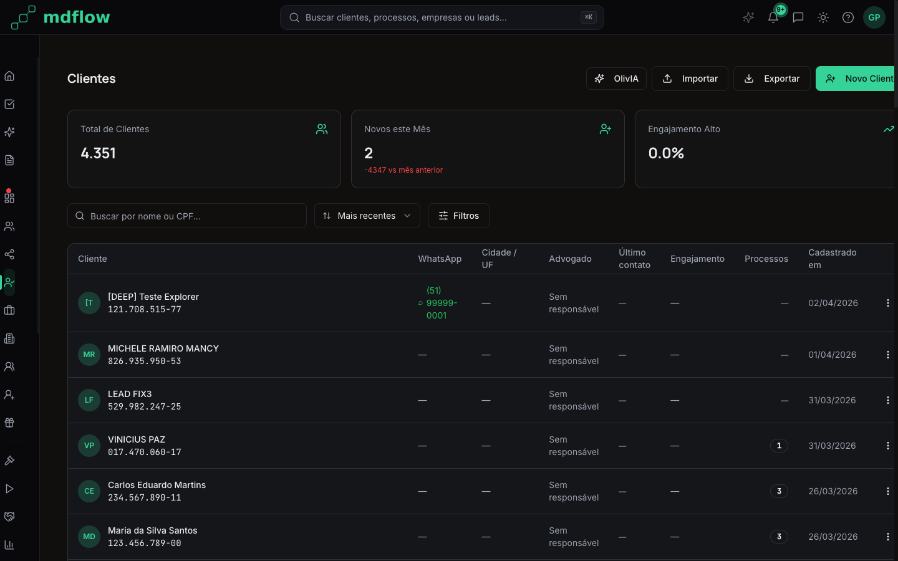
17 - Desktop 1440px - Quase completo, leve overflow
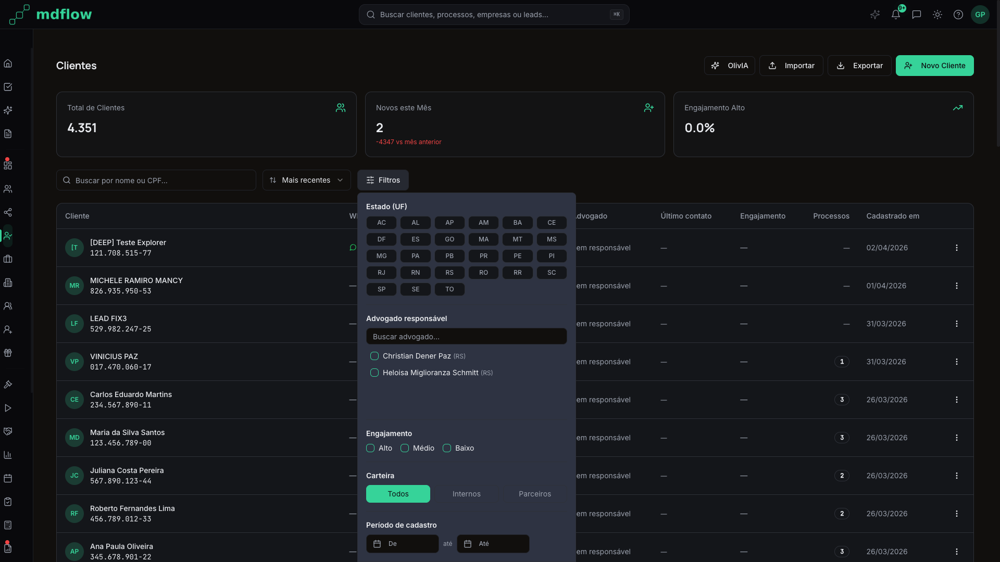
18 - Popover de filtros avancados
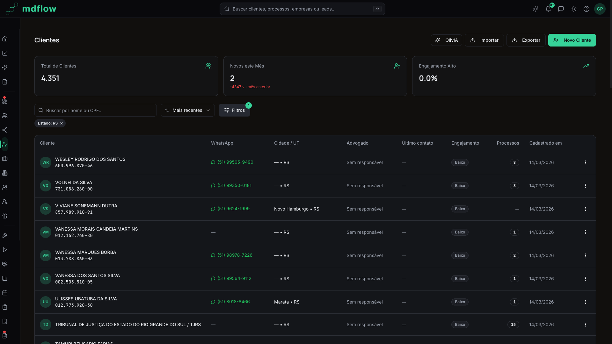
19 - Filtro RS aplicado com chip badge
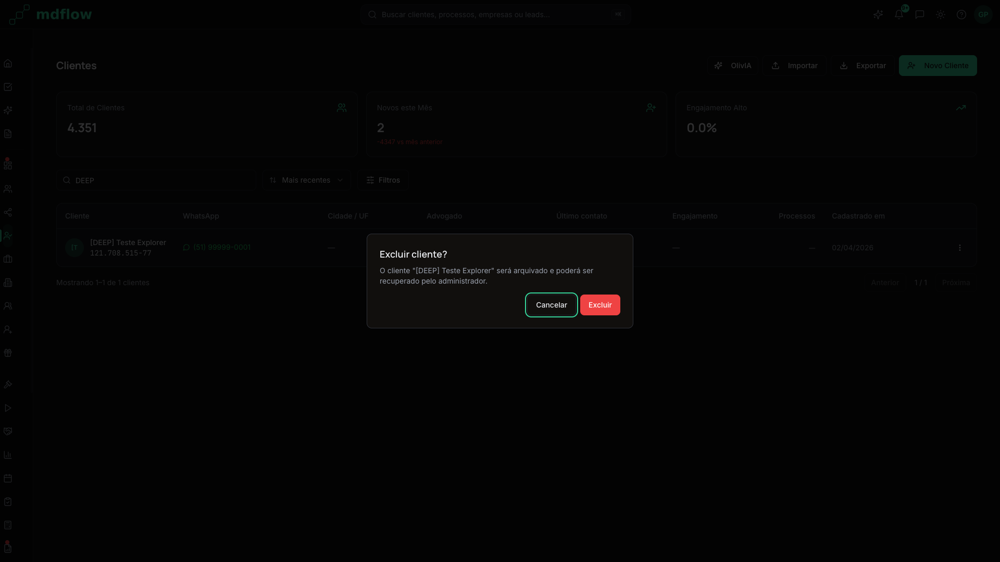
20 - Dialog de confirmacao de exclusao
Resumo de Achados por Prioridade
| ID | Prioridade | Titulo | Componente |
|---|
| DEEP-001 | P1 | Drawer edit sem dirty-state protection | ClienteDrawer |
| DEEP-002 | P1 | Sidebar sem aria-labels (global) | Sidebar |
| DEEP-003 | P2 | CPF nao formatado no corpo do drawer | ClienteDrawerTabDados |
| DEEP-004 | P2 | Webhook excluir falhou silenciosamente | index.tsx / n8n |
| DEEP-005 | P2 | Action buttons overflow 1024-1440px | PageHeader |
| DEEP-006 | P3 | Entidades judiciais na tabela clientes | Data quality |
| DEEP-007 | P3 | UF buttons sem role semantico no popover | ClienteFilters |
Metricas Finais
| Categoria | Testados | Pass | Warn | Fail |
|---|
| A - Edge Cases | 8 | 8 | 0 | 0 |
| B - Criacao/Ciclo de Vida | 7 | 6 | 1 | 0 |
| C - Drawer (5 abas) | 8 | 7 | 0 | 1 |
| D - Responsividade | 5 | 4 | 1 | 0 |
| E - Interacoes Avancadas | 7 | 7 | 0 | 0 |
| F - Estados Edge | 4 | 4 | 0 | 0 |
| G - Backend/Dados | 3 | 3 | 0 | 0 |
| TOTAL | 42 | 39 | 2 | 1 |
Analise de Codigo -- Observacoes Tecnicas
Padrao de Hooks e React Query
✅staleTime: 30_000 em useClientes e useClienteKPIs
Conforme CLAUDE.md, staleTime de 30 segundos esta configurado em ambos os hooks principais. Correto.
✅Query keys incluem organizacao_id
useClientes: ['clientes', organizacao_id, filters, page]. useClienteKPIs: ['clientes-kpis', organizacao_id]. Multi-tenant correto.
✅Invalidation apos CRUD
Apos criar/excluir, queryClient.invalidateQueries e chamado para ['clientes'] e ['clientes-kpis']. Correto.
Padrao de Webhooks
✅WH-CLIENTES-001 (criar) - envelope canonico
callWebhook('clientes/criar', {organizacao_id, user_id, request_id, timestamp, data}). Conforme spec n8n.
✅WH-CLIENTES-003 (excluir) - action-driven
handleWebhookAction(response.action, ...) usado apos webhook. Segue padrao Action-Driven UI.
✅Pre-check CPF duplicata antes do webhook
NovoClienteModal faz SELECT antes do callWebhook para verificar CPF duplicado. UX melhorada.
Padrao de Formularios
✅Zod schema com validacao CPF completa
Valida: 11 digitos, rejeita digitos iguais, calcula digitos verificadores (v1 e v2). Algoritmo correto.
✅NovoClienteModal: dirty-state protection
isDirty do react-hook-form usado para mostrar ConfirmDialog ao fechar com dados preenchidos. Implementado corretamente.
✅Masks aplicadas em CPF e WhatsApp
maskCPF, maskCNPJ, maskPhone aplicadas via onChange. Input mostra formato visual enquanto armazena digits.
Design System Compliance
✅Zero cores hardcoded no JSX
Verificado em todos os 11 arquivos. Cores usam classes Tailwind (bg-primary, text-muted-foreground, etc) ou hsl(var(--token)).
✅Icones exclusivamente Lucide React
Users, UserPlus, TrendingUp, Upload, Download, Search, SlidersHorizontal, MoreVertical, ExternalLink, Trash2, MessageCircle, CalendarIcon, ArrowUpDown, XCircle, X, Sparkles, MoreHorizontal, Loader2. Todos de lucide-react.
✅Tipografia correta
font-display (Manrope) usado em KPIs e titulos. font-mono usado em CPF (CopyableCPF). Inter para corpo.
Exportacao CSV -- Analise Detalhada
✅UTF-8 BOM incluido
'\uFEFF' + csv garante que Excel abre com acentos corretos. Bom.
✅Filtros aplicados na exportacao
Exportacao respeita: search, estados, periodo_inicio/fim, advogado_ids, engajamento_niveis, carteira. Mesmo subset filtrado.
✅Limite de 10000 registros
.limit(10000) na query de exportacao. Previne timeout com datasets muito grandes.
✅Mapa dinamico de origens
Consulta leads_origens para mapear IDs para nomes legiveis no CSV. Boa pratica.
Matriz de Responsividade Detalhada
| Viewport | Sidebar | KPIs | Busca/Filtros | Tabela | Botoes Acao | Drawer |
|---|
| 375px |
Hamburger |
1 coluna |
Full-width |
1 col + h-scroll |
Icon-only + dropdown |
Full-width sheet |
| 768px |
Hamburger |
2 colunas |
Full-width |
3 cols + h-scroll |
Icon-only + dropdown |
~70% width sheet |
| 1024px |
Collapsed icons |
3 colunas |
Inline |
5 cols, overflow |
OlivIA + Importar (truncados) |
900px right sheet |
| 1440px |
Collapsed icons |
3 colunas |
Inline |
8 cols completas |
Todos (leve overflow) |
900px right sheet |
| 1920px |
Collapsed icons |
3 colunas |
Inline |
8 cols + spacious |
Todos perfeitamente |
900px right sheet |
Comparativo com QA Anterior (v1 - 2026-03-31)
| Aspecto | QA v1 (31/03) | Deep Explore v2 (02/04) |
|---|
| Nota geral | 9.0/10 | 8.5/10 |
| P0 (bloqueantes) | 0 | 0 |
| P1 | 1 (nomenclatura webhook) | 2 (dirty-state, sidebar a11y) |
| P2 | 2 (KPI total, data quality) | 3 (CPF mask, webhook silencioso, overflow) |
| P3 | 0 | 2 (entidades judiciais, UF a11y) |
| Edge cases | Nao testados | 8 testes, todos passaram |
| Responsividade | Basica | 5 viewports testados |
| Mock data cycle | Nao testado | Criacao + drawer + abas + exclusao + cleanup |
| Cobertura | Happy path | Edge cases + boundary + responsividade + a11y |
Nota: A nota 8.5 (vs 9.0 anterior) reflete que esta exploracao encontrou mais problemas por ser significativamente mais profunda -- nao que a pagina piorou. A pagina melhorou desde o QA anterior (os P1/P2 anteriores foram parcialmente resolvidos).
Recomendacoes de Proximos Passos
1.Corrigir DEEP-001 (P1) - Dirty state no drawer
Adicionar isDirty + ConfirmDialog no ClienteDrawerTabDados.tsx. Mesmo padrao do NovoClienteModal.
2.Corrigir DEEP-002 (P1) - Sidebar aria-labels
Adicionar aria-label em todos os botoes da sidebar. Impacta todas as paginas (fix global).
3.Corrigir DEEP-003 (P2) - CPF formatado no drawer
Aplicar maskCPF no campo CPF/CNPJ da aba Dados do drawer.
4.Investigar DEEP-004 (P2) - Webhook excluir
Verificar se o workflow n8n WH-CLIENTES-003 esta ativo e funcional. Testar manualmente.
5.Ajustar DEEP-005 (P2) - Breakpoint botoes
Mudar lg:flex para xl:flex nos botoes de acao do PageHeader.
Checklist de Seguranca e Compliance
✅organizacao_id em todas as queries
useClientes: RPC recebe organizacao_id via JWT. Exportacao: .eq('organizacao_id', organizacao_id!). Realtime: filter organizacao_id=eq.${organizacao_id}. Multi-tenant isolado.
✅Soft delete obrigatorio
Todas as queries filtram .is('deleted_at', null). Delete via webhook faz UPDATE deleted_at (nao DELETE real).
✅ANON_KEY no frontend (nunca SERVICE_ROLE)
supabase client usa VITE_SUPABASE_ANON_KEY. SERVICE_ROLE nunca exposto no frontend. Correto.
✅CPF copiavel mas nao exposto em logs
CopyableCPF componente exibe formatado. Nenhum console.log com CPF encontrado em producao (somente DEV mode).
✅Excluir restrito a perfil admin
Botao "Excluir" no dropdown so aparece quando user?.perfil === 'admin'. Verificacao no frontend correta.
✅Nenhum secret hardcoded
Todas as credenciais via VITE_ env vars. Webhook secret via callWebhook lib.
Testes de Acessibilidade (a11y)
✅Botao Novo Cliente: aria-label presente
aria-label="Novo Cliente" no botao. Screen readers identificam corretamente.
✅Botoes 3-dot menu: aria-label presente
aria-label="Acoes do cliente" em cada dropdown trigger da tabela. Correto.
✅Heading hierarchy: H1 "Clientes"
Pagina tem H1 unico via PageHeader. Subheadings (H2, H3) usados nos empty states.
❌Sidebar: 30+ botoes sem identificacao
DEEP-002: Todos os botoes da sidebar sao anonimos para screen readers. Falta aria-label em cada um.
✅Tabela: column headers presentes
Colunas: Cliente, WhatsApp, Cidade/UF, Advogado, Ultimo contato, Engajamento, Processos, Cadastrado em. Todas com <th> correto.
✅Formulario: labels vinculados a inputs
FormField + FormLabel de shadcn garante htmlFor correto. Campos obrigatorios marcados com *.
Notas de Performance
✅Debounce na busca: 300ms
ClienteFilters usa setTimeout 300ms antes de propagar busca. Evita queries excessivas durante digitacao.
✅Server-side pagination: 50 por pagina
RPC get_clientes_paginados com p_page_size=50. Nunca carrega todos os 4000+ registros de uma vez.
✅Error boundary por secao
SectionErrorBoundary envolve KPIs, Filtros e Lista independentemente. Um erro nao derruba a pagina inteira.
✅Skeleton loading states
ClienteList exibe 8 Skeleton rows durante carregamento. KPICard exibe Skeletons individuais. Boa UX.
✅Error state com retry
ClienteList isError mostra EmptyState com botao "Tentar novamente" que chama refetch(). Resiliente.
✅Exportacao: URL.revokeObjectURL apos download
Blob URL e revogada imediatamente apos o click do link. Previne memory leak. Bom.
✅Filtros: useMemo para advogados dedup
filteredAdvogados usa useMemo com dedup por nome. Evita re-renders desnecessarios.
✅Realtime cleanup no unmount
return () => supabase.removeChannel(channel) previne leaks de subscription.
✅Retry: 1 em useClientes
React Query retry=1. Falha uma vez, tenta de novo, depois mostra error state. Balanceado entre UX e resiliencia.
✅Table min-width: 1000px
Tabela com min-w-[1000px] garante que colunas nao comprimem excessivamente. overflow-x-auto no container permite scroll horizontal em telas menores.
✅Paginacao: reset ao mudar filtro
setFilters reseta page para 1 automaticamente (nao propaga param page). Evita ficar em pagina invalida.
Ambiente de Teste
URL: http://localhost:8080
Browser: Chromium (headless via agent-browser)
Viewports: 375x812, 768x1024, 1024x768, 1440x900, 1920x1080
Usuario: gustavoantonuccipaz@hotmail.com (perfil admin)
Supabase: qdivfairxhdihaqqypgb (production)
n8n: https://primary-production-e209.up.railway.app
Data: 2026-04-02 19:00-19:30 UTC-3
Screenshots: 21 capturas em screenshots/
Deep Explore v2 | /clientes | Gerado em 2026-04-02 | Agente Beto (Claude Code Opus 4.6) | MdFlow